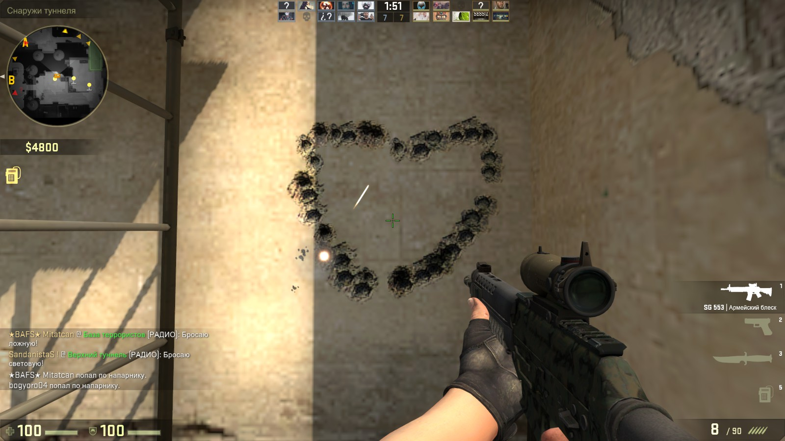

Кс Го
Counter-Strike: Global Offensive — ведущий киберспортивный шутер. Киберспортом называются соревнования высочайшего уровня. Ежегодно проводятся десятки международных турниров по Counter-Strike: Global Offensive, собирающие сотни команд.
Все соревнования можно разделить на две больших группы: сетевые и LAN. Первые играются через интернет, а вторые — по локальной сети, от чего и произошло их название. LAN-турниры считаются более престижными. Они похожи на привычный спорт. Есть арена, трибуны, зрители, комментаторы и другие атрибуты.
Издатель игры, Valve, поддерживает киберспорт и ежегодно проводит несколько турниров под своим покровительством. Они называются мэйджоры. Победа на мэйджоре — высочайшая точка в карьере игрока, ее можно сравнить с победой на чемпионате мира.